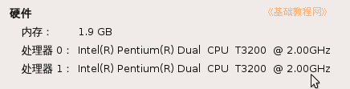

硬件基础教程
作者：TeliuTe 来源：基础教程网
CPU 是电脑的核心单元，负责处理数据和发布指令，下面我们来看一个练习；
1、Intel 处理器
1）Intel 是著名的CPU生产厂商，同时也生产配套的主板芯片组；
2）CPU 的速度一般用GHz表示，一般是2.0GHz以上，双核有一个Dual 标记，从“我的电脑－属性”中可以查看；

3）除了速度以外，CPU 还看它的缓存 Cache 大小，制作工艺(纳米)，耗电量功耗等等；
4）32位和64位的 CPU 是指硬件方面，可以运算的数据宽度，可以安装64位的操作系统和软件；
2、AMD 处理器
1）AMD 处理器价格便宜速度快，并且首先开发出了64位CPU；
2）AMD 处理器的速度用数字表示，比如5000；
3）不论使用 Intle 还是 AMD 处理器电脑，可以多关注一下机箱噪音和发热，尤其在夜深人静时；
本节学习了CPU 的基础知识，如果你成功地完成了练习，请继续学习下一课内容；
本教程由86团学校TeliuTe制作|著作权所有
基础教程网：http://teliute.org/
美丽的校园……
转载和引用本站内容，请保留版权信息和本站链接。